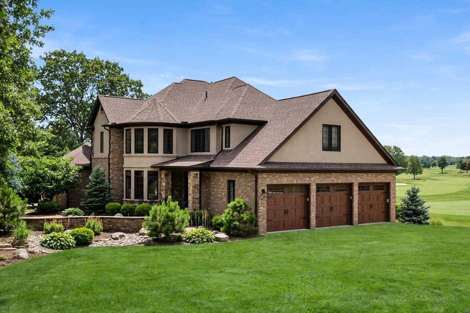
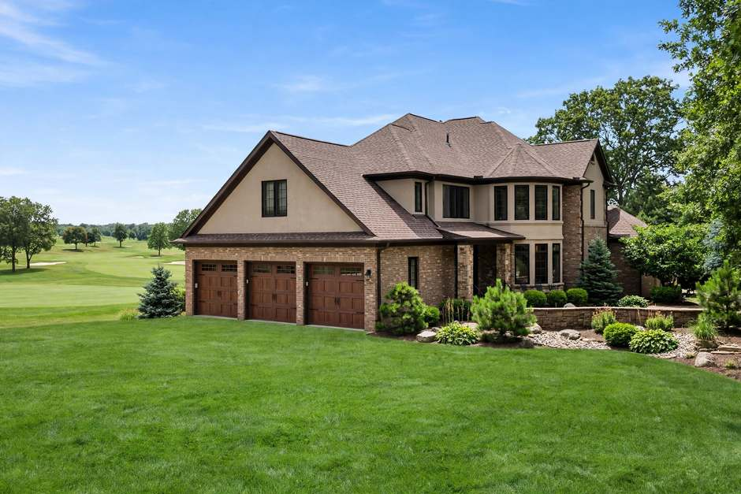

Planned Subdivision, Belleville, Illinois
Plumbing in The Orchards
Hinkle Plumbing Company serves The Orchards from 1610 W Main St, Belleville, IL 62220. This planned subdivision, founded in 1991, pairs custom homes with an 18-hole golf course, and its 1990s and later pipe materials call for first-cycle checks rather than whole-house repiping. Call (618) 677-6556 to discuss a problem.
Call (618) 677-6556Monday through Friday, 8:00 AM to 4:30 PMSubdivision founded 1991; 18-hole golf course by Bob Goalby
A Planned Golf-Course Subdivision
Custom homes, large lots, and long pipe runs
The Orchards is a plan-named subdivision founded in 1991 as a planned residential community with an 18-hole golf course designed by Bob Goalby. Homes are custom builds from 1991 onward, added in phases over decades rather than as a single-year tract. Lot samples in the subdivision ranged from 0.49 to 0.85 acre, so one-acre describes the subdivision type, not every lot. Large custom homes carry high fixture counts, which makes supply sizing and simultaneous demand the central questions, along with long service and lateral runs across half-acre-plus lots. Pipe materials are the 1990s and later mix: copper or PEX supply with PVC drains, so water heater and fixture failures arrive as first-cycle replacements rather than repiping. Lots backing to fairways and trees carry longer root exposure for laterals, and a homeowners association exists, so covenant checks come before exterior work.
Explore The Orchards services
Hinkle Plumbing CompanyCustom homes beside a golf course fairway in The Orchards.
Services for This Subdivision
Plumbing services for custom homes
Services below are scoped against high fixture counts, long pipe runs, and first-cycle failures in 1990s and later homes.
01
Water Heater Installation
First-cycle replacements arrive as tanks reach end of life in 1990s and later homes. Sizing follows fixture count and simultaneous demand, and hot water heaters require an electrical or gas permit.
02Water Heater Repair
No hot water, rumbling, and leaks at fittings are the usual repair questions. Repair-or-replace discussions weigh tank condition, venting, and the permit rule for hot water heaters.
03Leak Repair
Leaks at fixtures, valves, and appliance connections are the first-cycle pattern in homes of this era. Repairs follow detection findings and the condition of the adjoining pipe.
04Sewer Camera Inspection
Long laterals across large lots carry more joints and more root exposure where lots back to trees. A camera pass records the full run before any excavation is discussed.
05Drain Cleaning
Grease, scale, and roots collect in long drain and lateral runs. Clearing is matched to PVC and cast-iron materials, and recurring clogs point toward a camera inspection.
06Hydro Jetting
High-pressure scouring clears grease and scale that snaking only pierces. A camera pass comes first, since jetting a cracked or collapsed pipe makes the damage worse.
Subdivision Realities
Large lots, golf edges, and phased additions
Large lots, golf-course edges, and phased additions shape plumbing questions in this subdivision.
Large lots and high fixture counts
Custom homes from 1991 onward carry high fixture counts across multiple levels, so supply sizing and simultaneous demand matter more than pipe age. Long service and lateral runs cross half-acre-plus lots, adding joints and root exposure along the way. First-cycle failures in water heaters, fixtures, and pressure-reducing valves are the expected pattern, not repiping. How we help: Sizing checks and water heater discussions follow fixture counts and simultaneous demand, and camera inspection covers the full lateral run across the lot from house to main.
Golf-course lot edges
Lots backing to fairways, trees, and woods carry lateral and root checks that plain suburban tracts do not share, and irrigation adds a backflow question for the potable supply. Golf-course irrigation and lake adjacency do not imply any sewer or water-provider difference, since none was verified for this subdivision. How we help: Root exposure and irrigation connections are checked per lot, and provider questions are answered from the water provider's records rather than from subdivision marketing material.
Phased additions, not one build year
Additions from the 4th through the 16th mean a 1990s home and a 2010s home share the same subdivision name, with different materials and different first-cycle timing. Build year must be verified per address, and era-typical expectations are applied only after that check, never from the subdivision name alone. How we help: The build year of each address is confirmed first, and scope follows the materials and fixtures actually present in that house, not the subdivision average.
Signs to Note
Signs that point toward sizing and long runs
A small visible symptom can point to a bigger pattern.
Hot water runs out sooner
High fixture counts and simultaneous demand strain tanks sized for lighter use. Sizing, tank condition, and demand patterns are checked together before replacement is discussed.
Pressure drops when several fixtures run
Simultaneous demand across a large custom home exposes sizing limits. Pressure readings under load show whether the limit sits in sizing, a valve, or the service line.
Slow drains on long runs
Long laterals give grease, scale, and roots more room to collect. A camera pass shows whether the restriction is a clog, a root mass, or a structural defect.
Wet patches along the lateral path
A break in a long lateral can surface as wet patches or lush growth between the house and the street. A camera inspection locates the defect before digging is discussed.
Scope and Cost
What shapes the cost of a job here
Fixture count, lot size, and build year set the scope of work in this subdivision.
Diagnosis first
Camera footage, pressure readings, and fixture counts establish the scope. Findings are discussed by phone during office hours, and scope follows evidence rather than assumption.
Repair in place
First-cycle fixture and appliance failures are often handled as repairs. Access, material, and any covenant check are part of the scope discussion for each address.
Planned replacement
Water heaters and fixtures at end of life are scoped as replacements, with sizing, permits, and restoration discussed together. Call (618) 677-6556 to discuss a specific address.
Subdivision Anchors
Course, clubhouse, and fairway streets
The golf course, clubhouse, and fairway streets below come from the subdivision record.
18-Hole Golf Course by Bob Goalby
The subdivision's 18-hole golf course was designed by Bob Goalby and forms the central amenity. Fairway-backed lots carry the root and irrigation checks described on this page.
Clubhouse, 1499 Golf Course Drive
The clubhouse and course address is 1499 Golf Course Drive, Belleville, IL 62220. It anchors the subdivision and its recreation amenities, including the pool and tennis courts named in listings.
Golf Course Drive and Fairway Streets
Golf Course Drive is the spine street, with Titleist Drive, 18th Green Court, and 18th Fairway Drive among the fairway-side addresses in the subdivision founded in 1991.
Lake, Pool, and Tennis Amenities
Listings name a clubhouse, pool, tennis courts, and a lake among subdivision amenities. Amenity details in listings change, so current details are checked rather than assumed.
Coverage
Where this page applies
This page covers The Orchards subdivision in the eastern part of Belleville, Illinois. The subdivision is a plan-named community founded in 1991, and its phased additions span decades, so build year is verified per address. Work is discussed by phone during office hours, and no ZIP code is used here as a service boundary.
Streets and landmarks: Golf Course Drive, Titleist Drive, 18th Green Court, 18th Fairway Drive
Check my address →
1234
Office: 1610 W Main St, Belleville, IL 62220Call (618) 677-6556 Monday through Friday, 8:00 AM to 4:30 PM. Closed Saturday and Sunday.
Reviews from Google
What Customers Say on Google
★★★★★
“Very prompt and responsive, the worker was friendly and informative! Will use this company again!”
★★★★★
“Don did an outstanding job for me when I needed him and highly recommend his business”
★★★★★
“Rated 5.0 out of 5 across 3 Google reviews, all five stars.”
Nearby Areas
Other documented Belleville areas
Reunion
A traditional neighborhood design subdivision with 2000s-era homes and a Planned Unit Development origin.
Old Belleville Historic District
The east-side historic core with German street houses and row houses from 1830 to 1900 on narrow lots.
West Belleville Historic District
The former independent village across Richland Creek, listed on the National Register in 2014.Questions
Questions about plumbing in this subdivision
Our team can help if your question is not answered here.
Call (618) 677-6556Does a homeowners association affect plumbing work here?
A homeowners association exists for The Orchards, and exterior-work and covenant checks are expected before exterior work begins. Current association rules should be verified rather than assumed, since rules change. No association fee is stated here. Interior work is discussed on its own terms, and exterior scope follows the covenant check.
Why does build year matter within one subdivision?
The Orchards was built in phases from the 4th addition through the 16th, so a 1990s home and a 2010s home share the subdivision name with different materials and different first-cycle timing. Build year is verified per address, and era-typical expectations are applied only after that check.
Do plumbing jobs here need a permit?
The City of Belleville requires a permit before plumbing work begins (§152.05(A)); direct replacement of a toilet, sink, faucet, or other appliance is exempt, except hot water heaters require an electrical or gas permit (§152.05(B)(3)). Permit questions for a specific job are discussed by phone during office hours.
Who owns the sewer lateral?
The owner owns the sewer lateral from the building to the city main, including the portion under streets, under City code §50.023. The City operates a Sewer Lateral Repair Program covering the portion beyond the property line; readers should check current City program details for terms. A camera inspection establishes where a defect sits relative to the property line.
Mon–Fri 8:00 AM–4:30 PM
Discuss a plumbing problem in The Orchards
Call Hinkle Plumbing Company at (618) 677-6556 Monday through Friday, 8:00 AM to 4:30 PM. Closed Saturday and Sunday. Describe the problem, the age of the house where that detail is available, and what has changed, and the scope factors will be discussed from there.

Talk with the local team
Contact Hinkle Plumbing Company
Call (618) 677-6556 during office hours, Monday through Friday, 8:00 AM to 4:30 PM. Tell us what is happening and we will talk through the next step.